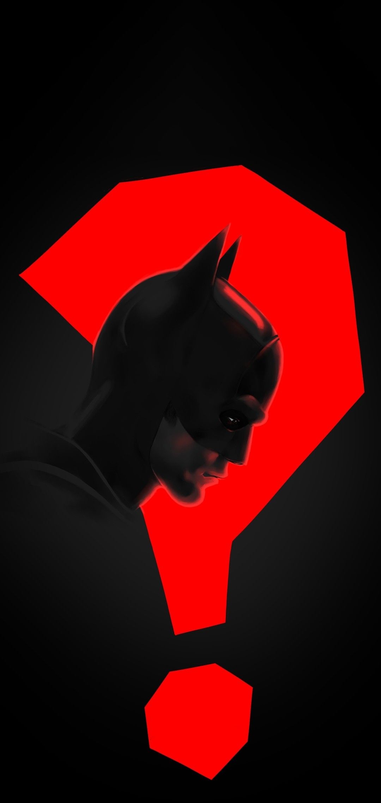

The Batman 2022
Thursday, October 31st, The city streets are crowded for the holiday.
Even with the rain. Hidden in the chaos is the element, waiting to strike like snakes. I must choose my targets carefully.
I have to become more. Push myself.
Sometimes in the morning I have to force myself to remember. Everything that has happened.
The Top Batman movies in order:
- The Batman (2022)
- The Dark Knight (2008)
- Batman Begins (2006)
- The Dark Knight Rises (2012)
The Batman (2022) Quotes:
- I am starting to see now.
- Vengeance cannot change the past
- Mine or anyone elses
- I have to become more
The Top Five Batman Videogames:
- Batman: Arkham Asylum (2009)
- Batman: Arkham City (2011)
- Batman: Arkham Origins (2013)
- Batman: Arkham Knight (2015)
The Best Actors Who Played As The Batman (unordered):
- Christian Bale
- Was in three batman movies
- Robert Pattinson
- Was in the most recent Batman movie, just one.
- Ben Affleck
- Very questionable, had potential but still watchable/
- Michael Keaton
- Kevin Conroy
- Val Kilmer
- George Clooney
- Adam West
Something in the Way
This is another link
